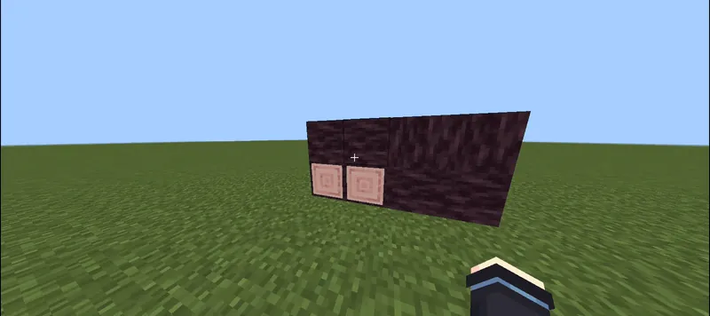
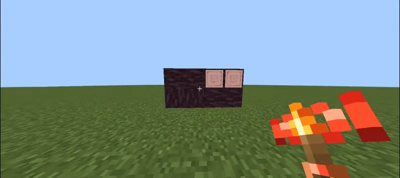
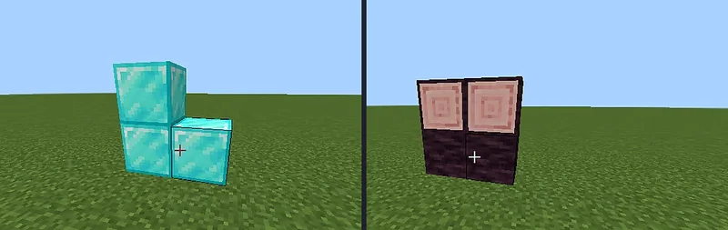
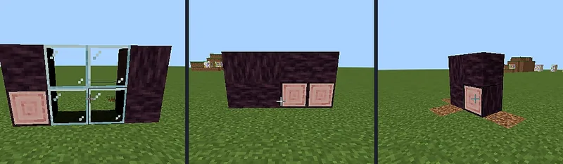
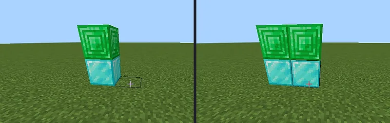
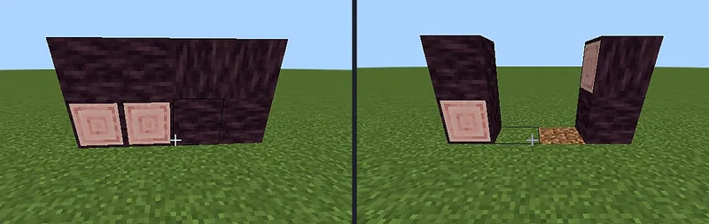
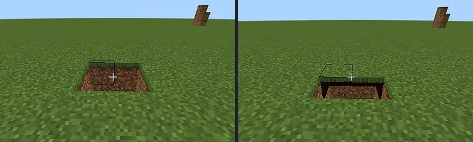

- Множество исправлений багов — закрывается длинный список сообщений о проблемах.
- Переработанная логика — часть внутренней логики перестраивается.
- Больше ванильных стеклянных блоков — обычное, тонированное и цветное стекло.
- Расширенный реестр — реестр блоков для маскировки вырастет далеко за 290+.
Страницы ниже описывают текущий релиз v2.1.5. Следите за проектом на CurseForge, чтобы узнать о выходе обновления.

Пятиканальный камуфляж
Маскировка копирует грани текстур, ось брёвен, оттенок биома, звуки блока и реальный уровень света — а не плоскую картинку.
Односторонний обзор
Сплошное со стороны коридора, прозрачное изнутри, анимируется в руке при переключении режима.
Честная инженерия
Работает в креативе и выживании, ломается правильным инструментом, соблюдает правило одного дропа, не оставляет осиротевших половинок.
Беспроводной по замыслу
Беспроводные факелы не дают сигнала редстоуна и открывают привязанные двери сквозь стены, с любого расстояния.
290+ блоков, 411 состояний
Глубокий реестр с осью, гранями, оттенком биома, звуком и светом — и он продолжает расти.
Готов к серверам
Хост ставит пак, клиенты получают всё автоматически. Без экспериментов, без телеметрии.



Что внутри
Каждый предмет задокументирован в вики — механики, жесты, рецепты и ограничения.
Маскировочный блок
gg:super_block⧉Проходимая призрачная стена. Копирует пять свойств блока, по которому вы кликнули.
Смотровое стекло
gg:super_glass⧉Одностороннее окно: снаружи сплошное, изнутри прозрачное, 1 ↔ 5 граней.
Маскировочная дверь
gg:super_door⧉Две половинки, два камуфляжа, рука или редстоун, автоматически образует пару.
Маскировочный люк
gg:super_trapdoor⧉Крепление сверху или снизу, невидимая рамка, открывается навстречу игроку.
Редстоун-варианты
gg:super_door_rs / gg:super_trapdoor_rs⧉Заблокированы от руки. Открывает только сигнал редстоуна или привязанный факел.
Факелы-рычаги
gg:torch_lever / gg:*_remote⧉Выглядят на 100% ванильно. Проводные дают сигнал 15, беспроводные — 0.





| Версия | v2.1.5 |
| Игра | Minecraft: Bedrock Edition 1.26.40 и новее |
| Тип пака | Пак поведения + пак ресурсов (один .mcaddon) |
| Содержимое | 10 предметов • 290+ скинов камуфляжа • 411 структурных состояний |
| Эксперименты | Не требуются |
| Языки | Английский, русский — все подсказки, субтитры и сообщения |
| Платформы | Windows, Android, iOS, Xbox, PlayStation, Switch, Realms, выделенные серверы |
| Мультиплеер | Пак нужен хосту • клиенты получают его автоматически |
| Script API | @minecraft/server 2.9.0 • без сетевых запросов и телеметрии |
| Лицензия | Все права защищены • OM Studio EULA v3.1 |
Gloamguise: False Facades v2.1.5
Официальная прямая загрузка с этого сайта. CurseForge остаётся зеркалом и историей файлов. Один .mcaddon содержит оба пака.
Статистика
Скачивания
Gloamguise: False Facades
Прямые загрузки .mcaddon с этого сайта плюс загрузки на CurseForge.
Открыть вики
Семнадцать страниц на каждом языке: каждая механика разобрана, каждый рецепт, каждое честное ограничение.